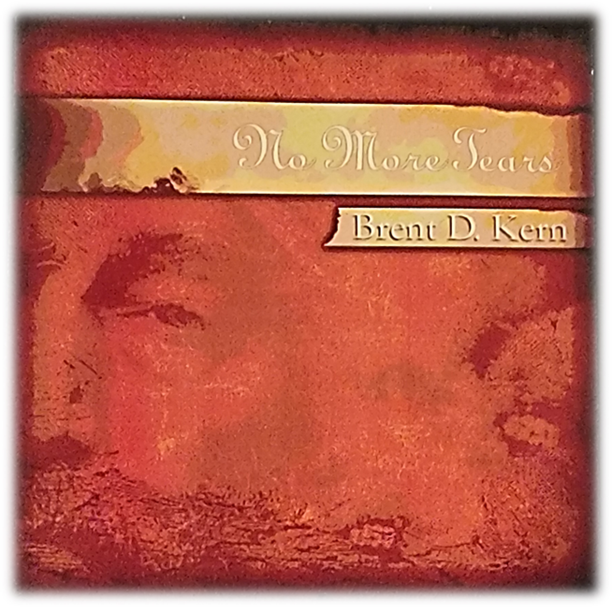

Song of the week
Faith for every step
Wherever you are today, you have a next step.
A place to begin
Choose the next step that speaks to where you are today.
Fresh encouragement each week
Discover a song from our music library and a message from our sermon library. Everyone begins with the same weekly selections.

Song of the week
Christian Steps Ministries is here to help all people find their way in life and to walk in the steps God the Father and Jesus Christ His Son have planned for each of us. We believe every person is on a unique journey—no one is “ahead” or “behind.” We all have a next step.
If you have questions or prayer requests, please don’t hesitate to reach out to our team. We’ll do our best to help you seek God’s wisdom.
God told us to remember His Holy Days throughout all generations.
Leviticus 23:1 — “These are my appointed festivals, the appointed festivals of the Lord, which you are to proclaim as sacred assemblies.”
Interested in biblical Holy Days? Explore dates and notes with an easy year selector and a printable wallet calendar.
Go to Holy Days →“Preach the Gospel at all times; when necessary, use words.” — Saint Francis of Assisi
This commitment to living faith through action is why you may see our emails signed WitLooL™. Learn what it means →